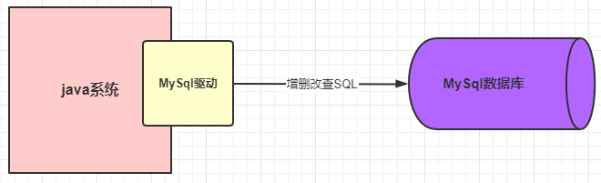
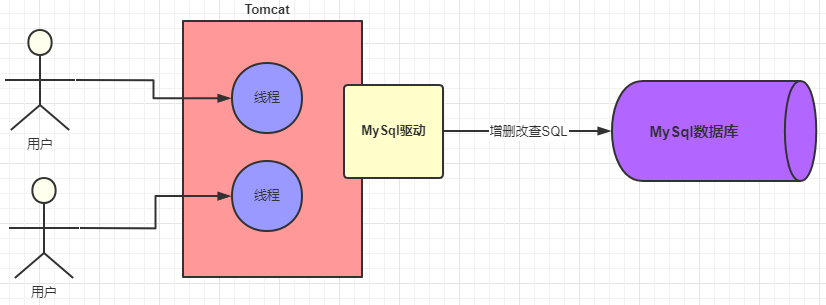
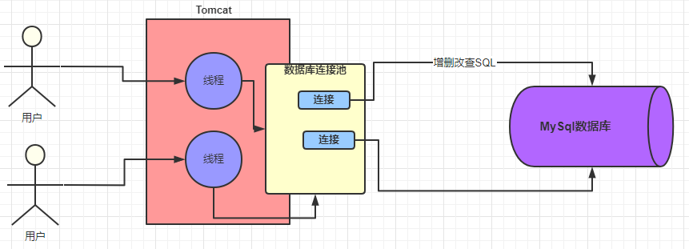
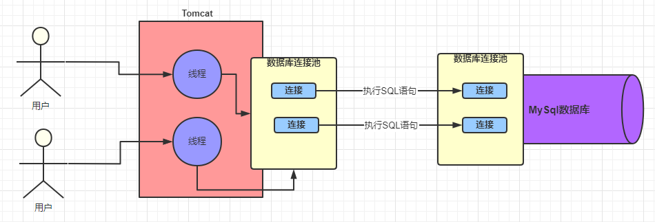
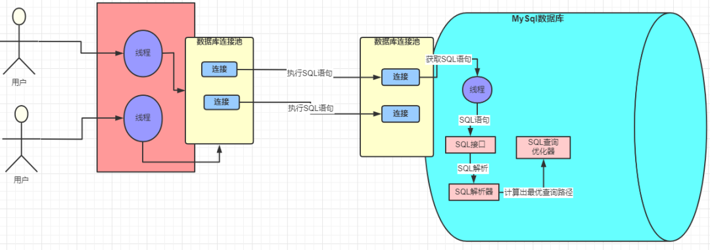
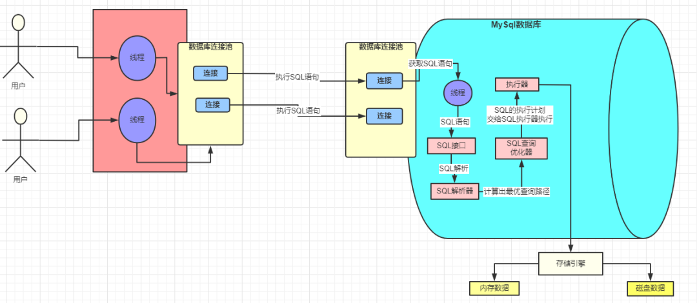
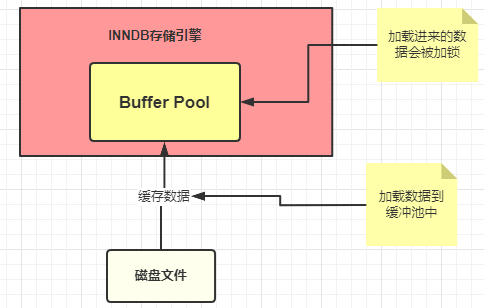
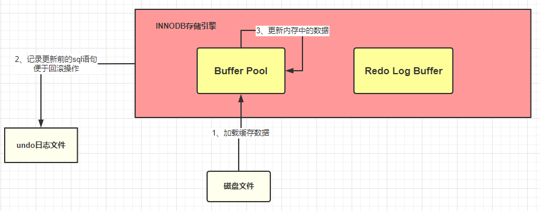
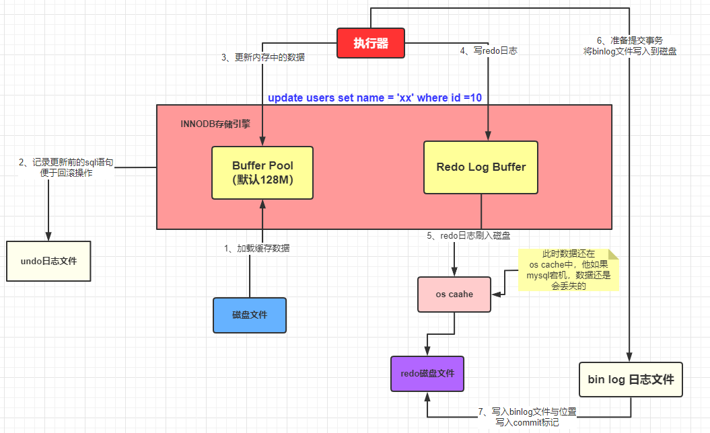
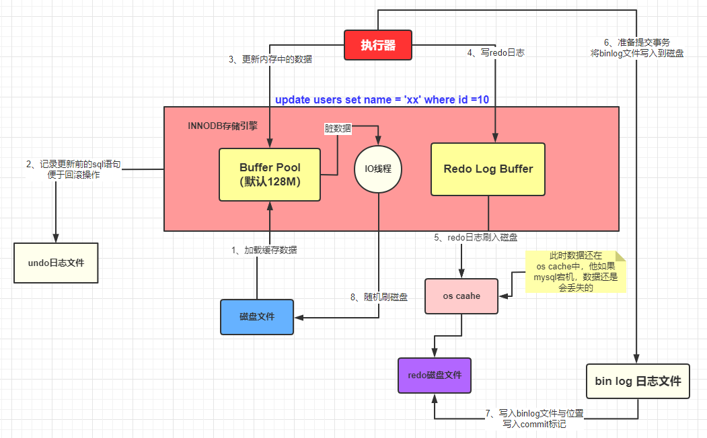

MySQL 一条 SQL 语句的执行过程

MySQL 驱动
我们的系统在和 MySQL 数据库进行通信的时候，总不可能是平白无故的就能接受和发送请求，就算是你没有做什么操作，那总该是有其他的“人”帮我们做了一些事情，基本上使用过 MySQL 数据库的程序员多多少少都会知道 MySQL 驱动这个概念的。就是这个 MySQL 驱动在底层帮助我们做了对数据库的连接，只有建立连接了，才能有后面的交互。看下图表示：

这样的话，在系统和 MySQL 进行交互之前，MySQL 驱动会帮我们建立好连接，然后我们只需要发送 SQL 语句就可以执行 CRUD 了。一次 SQL 请求就会建立一个连接，多个请求就会建立多个连接，那么问题来了，我们系统肯定不是一个人在使用的，换句话说肯定是存在多个请求同时去争抢连接的情况。我们的 web 系统一般都是部署在 tomcat 容器中的，而 tomcat 是可以并发处理多个请求的，这就会导致多个请求会去建立多个连接，然后使用完再都去关闭，这样会有什么问题呢？如下图：

java 系统在通过 MySQL 驱动和 MySQL 数据库连接的时候是基于 TCP/IP 协议的，所以如果每个请求都是新建连接和销毁连接，那这样势必会造成不必要的浪费和性能的下降，也就是说上面的多线程请求的时候频繁的创建和销毁连接显然是不合理的。必然会大大的降低我们系统的性能，但是如果给你提供一些固定的用来连接的线程，这样是不是就不需要反复的创建和销毁连接了呢？相信懂行的朋友会会心一笑，没错，就是数据库连接池。
数据库连接池：维护一定的连接数，方便系统获取连接，使用就去池子中获取，用完放回去就可以了，我们不需要关心连接的创建和销毁，也不需要关心线程池是怎么去维护这些连接的。

常见的数据库连接池有 Druid、C3P0、DBCP，连接池实现原理在这里就不深入讨论了，采用连接池大大节省了不断创建与销毁线程的开销，这就是有名的「池化」思想，不管是线程池还是 HTTP 连接池，都能看到它的身影。
数据库连接池
到这里，我们已经知道的是我们的系统在访问 MySQL 数据库的时候，建立的连接并不是每次请求都会创建的，而是从数据库连接池中去获取，这样就解决了因为反复的创建和销毁连接带来的性能损耗问题了。不过这里有个小问题，业务系统是并发的，而 MySQL 接受请求的线程呢，只有一个？
其实 MySQL 的架构体系中也已经提供了这样的一个池子，也是数据库连接池。双方都是通过数据库连接池来管理各个连接的，这样一方面是线程之前不需要争抢连接，更重要的是不需要反复的创建和销毁连接。

至此系统和 MySQL 数据库之间的连接问题已经说说明清楚了。那么 MySQL 数据库中这些连接是怎么来处理的，又是谁来处理的呢？
网络连接必须由线程来处理
对计算机基础稍微有一点了解的同学都是知道的，网络中的连接都是由线程来处理的，所谓网络连接说白了就是一次请求，每次请求都有相应的线程去处理。也就是说对于 SQL 语句的请求在 MySQL 中是由一个个线程去处理的。

那这些线程会怎么去处理这些请求？会做哪些事情？
SQL 接口
MySQL 中处理请求的线程在获取到请求以后获取 SQL 语句去交给 SQL 接口处理。
查询解析器
假设现在有这样一个 SQL。
1 | SELECT stuName,age,sex FROM students WHERE id=1 |
但是这个 SQL 是写给我们人看的，机器哪会知道你在说什么？这个时候解析器就上场了。他会将 SQL 接口传递过来的 SQL 语句进行解析，翻译成 MySQL 自己能认识的语言，至于怎么解析的就不需要再深究了，无非是自己的一套规则。

现在 SQL 已经被解析成 MySQL 认识的样子了，那下一步不就是执行了吗？理论上来说是这样的，但是 MySQL 的强大远不止如此，它还会帮我们选择最优的查询路径。
什么叫最优的查询路径？就是 MySQL 会按照自己认为的效率最高的方式去执行查询。
具体是怎么做到的呢？这就要说到 MySQL 的查询优化器了。
MySQL 查询优化器
查询优化器内部具体怎么实现的我们并不关心，我们需要知道的是 MySQL 会帮我们去使用它自己认为最好的方式去优化这条 SQL 语句，并且生成一条条的执行计划，比如你创建了多个索引，MySQL 会依据成本最小原则来选择使用响应的索引，这里的成本主要包括两个方面，IO 成本和 CPU 成本。
IO 成本：即从磁盘把数据加载到内存的成本，默认情况下，读取数据页的 IO 成本是 1，MySQL 是以页的形式读取数据的，即当用到某个数据时，并不会只读取这个数据，而会把这个数据相邻的数据也一起读到内存中，这就是有名的程序局部性原理，所以 MySQL 每次会读取一整页，一页的成本是 1。所以 IO 的成本主要和页的大小有关。
CPU 成本：将数据读入内存后，还需要杰测数据是否满足条件和排序等 CPU 操作的成本，显然它和行数有关，默认情况下，检测记录的成本为 0.2.
MySQL 优化器会计算「IO 成本 + CPU 成本」最小的那个索引来执行。

优化器执行选出最优索引等步骤后，会调用存储引擎接口，开始去执行被 MySQL 解析过和优化过的 SQL 语句。
存储引擎
查询优化器会调用存储引擎的接口，去执行 SQL，也就是说真正执行 SQL 的动作是在存储引擎中完成的。数据是被存放放在内存或者是磁盘中的（存储引擎是一个非常重要的组件，后面会详细介绍）
执行器
执行器是一个非常重要的组件，因为前面那些组件的操作最终必须通过执行器去调用存储引擎的接口才能被执行。执行器最终根据一系列的执行计划去调用存储引擎的接口去完成 SQL 的执行。

初识存储引擎
我们以一个更新的 SQL 语句来说明，SQL 如下：
1 | UPDATE students SET stuName = '张三' WHERE id = 1 |
当我们系统发出这样的语句去交给 MySQL 的时候，MySQL 会按照我们上面介绍的一系列的流程最终通过执行器调用存储引擎去执行，流程图就是上面那个。在执行这个 SQL 的时候 SQL 语句对应的数据要么在内存中，要么是在磁盘中，如果在磁盘中操作，那这样的随机 IO 读写的速度肯定是让人无法接受的，所以每次在执行 SQL 的时候，都会将数据加载到内存中，这块内存就是 InnoDB 中一个非常重要的组件：缓冲池 Buffer Pool。
Buffer Pool
Buffer Poll（缓冲池）是 InnoDB 存储引擎中非常重要的内存结构，顾名思义，缓冲池其实就是类似 Redis 一样的作用，因为我们都知道 MySQL 的数据最终是存储在磁盘中的，如果没有这个 Buffer Poll 那么我们每次的数据库请求都会在磁盘中查找，这样必然会存才 IO 操作，这肯定是无法接受的。但是如果有了 Buffer Poll 就是我们在第一次查询的时候会将查询的结果存到 Buffer Poll 中，这样后面再有请求的时候就会先从缓冲池中查询，如果没有再去磁盘中查找，然后放到 Buffer Poll 中，如下图：

按照上面的图，这条 SQL 语句的执行步骤大概是这样的：
- InnoDB 存储引擎会在缓冲池中查找
id = 1的这条数据是否存在。 - 发现不存在，那么就会去磁盘中加载，并将其放在缓冲池中。
- 该条记录会被加上一个独占锁（总部能你在修改的时候别人也在该吧）
undo 日志文件：记录数据被修改前的样子
undo 顾名思义，就是没有做，没有发生的意思。undo log 就是没有发生事情（原本事情是什么样子）的一些日志。
我们刚刚已经说了，在准备更新一条语句的时候，该条语句已经被加载到 Buffer Pool 中来，实际上这里还有这样的操作，就是在将该条语句加载到 Buffer Poll 中的时候同时会往 undo 日志文件中插入一条日志，也就是将 id = 1 这条记录原来的值记录下来。
这样做的目的是什么？
InnoDB 存储引擎最大的特点就是支持事务，如果本次更新失败，也就是事务失败，那么该事务中的所有操作都必须回滚到执行前的样子，也就是说当事务失败的时候，也不会对原始数据有影响，如下图：

到这一步，我们执行的 SQL 语句已经被加载到 Buffer Pool 中了，然后开始更新这条语句，更新的操作实际是在 Buffer Pool 中执行的。那么问题来了，按照我们平时开发的一套理论缓冲池中的数据和数据库中的数据不一致的时候，我们就认为缓存中的数据是脏数据，那么此时 Buffer Pool 中的数据岂不是成了脏数据？没错，目前这条数据就是脏数据，Buffer Pool 中的记录是张三，数据库中的记录是李四，这种情况 MySQL 是怎么处理的呢？
redo 日志文件：记录数据被修改后的样子
除了从磁盘中加载文件和将操作前的记录保存到 undo 日志中，其他的操作是在内存中完成的，内存中数据的特点就是：断电丢失。如果此时 MySQL 所在的服务器宕机了，那么 Buffer Pool 中的数据会全部丢失的。这个时候 redo 日志文件就需要出来大显神通了。
画外音：redo 日志文件是 InnoDB 特有的，它是存储引擎级别的，不是 MySQL 级别的。
redo 记录的数据修改之后的样子，不管事务是否提交都会记录下来，例如，此时要做的是update students set stuName='小强' where id=1;那么这条操作就会被记录到 redo log buffer 中，啥？怎么又出来一个 redo log buffer，很简单，MySQL 为了提高效率，所以将这些操作都先放在内存中去完成，然后会在某个会时机将其持久化到磁盘中。

截至目前，我们应该熟悉了 MySQL 的执行器调用存储引擎是怎么将一条 SQL 加载到缓冲池和记录哪些日志的，流程如下：
- 准备更新一条 SQL 语句
- MySQL（InnoDB）会先去缓冲池（Buffer Pool）中去查找这条数据，没找到就会去磁盘中查找，如果查找到就会将这条数据加载到缓冲池（Buffer Pool）中。
- 在加载到 Buffer Poll 中的同时，会将这条数据的原始记录保存到 undo 日志文件中。
- InnoDB 会在 Buffer Pool 中执行更新操作。
- 更新后的数据会记录在 redo log buffer 中。
上面说的步骤都是在正常情况下的操作，但是程序的设计和优化并不仅是为了这些正常情况去做的，也是为了那些临界区和极端情况下出现的问题去优化设计的。
这个时候如果服务器宕机了，那么缓存中的数据还是丢失了。真烦，竟然数据总是丢失，那能不能不要放在内存中，直接保存到磁盘呢？很显然不行，因为在上面也已经介绍了，在内存中操作目的是为了提高效率。
此时，如果 MySQL 真的宕机了，那么没有关系的，因为 MySQL 会认为本次事务是失败的，所以数据依旧是更新前的样子，并不会有任何的影响。
好了，语句也更新好了那么需要将更新的值提交啊，也就是需要提交本次的事务了，因为只要事务成功提交了，才会将最后的变更保存到数据库，在提交事务前仍然会具有相关的其他操作。
将 redo log buffer 中的数据持久化到磁盘中，就是将 redo log buffer 中的数据写到 redo log 磁盘文件中，一般情况下，redo log buffer 数据写入磁盘的策略是立即刷入磁盘（具体策略情况在下面小总结处会详细介绍）

如果 redo log buffer 刷入磁盘后，数据库服务器宕机了，那么我们更新的数据怎么办？此时数据是在内存中，数据岂不是丢失了？不，这次数据就不会丢失了，因为 redo log buffer 中的数据已经被写入磁盘了，已经持久化了，就是数据库宕机了，在下次重启的时候 MySQL 也会将 redo 日志文件内容恢复到 Buffer pool 中（这边我理解的是和 Redis 的持久化机制是差不多的，在 Redis 启动的时候会检查 rdb 或者 aof 或者两者都检查，根据持久化的文件来将数据恢复到内存中）
到处为止，从执行器开始调用存储引擎接口做了哪些事情呢？
- 准备一条 SQL 语句。
- MySQL（InnoDB）会先去缓冲池（Buffer Pool）中去查找这条数据，没找到就会去磁盘中查找，如果查找到就会将这条数据加载到缓冲池（Buffer Pool）中。
- 在加载到 Buffer Poll 中的同时，会将这条数据的原始记录保存到 undo 日志文件中。
- InnoDB 会在 Buffer Pool 中执行更新操作。
- 更新后的数据会记录在 redo log buffer 中。
- MySQL 提交事务的时候，会将 redo log buffer 中的数据写入到 redo 日志文件中，刷磁盘可以通过
innodb_flush_log_at_trx_commit参数来设置。- 值为 0 表示不刷入磁盘
- 值为 1 表示立即刷入磁盘
- 值为 2 表示先刷到 os cache
- MySQL 重启时会将 redo 日志恢复到缓冲池中。
截至到目前位置，MySQL 的执行器调用存储引擎的接口去执行「执行计划」提供的 SQL 的时候 InnoDB 做了哪些事情也就差基本差不多了，但是这还没完。下面还需要介绍下 MySQL 级别的日志 bin log。
bin log 日志文件：记录整个操作过程
上面介绍到的 redo log 是 InnoDB 存储引擎特有的日志文件，而 bin log 是属于 MySQL 级别的日志。redo log 记录的东西是偏向于物理性质的，如：“对上面数据，做了什么修改”。bin log 是偏向于逻辑性质的，类似于：“对 students 表中 id 为 1 的记录做了更新操作”两者的主要特点总结如下。
| 性质 | redo log | bin log |
|---|---|---|
| 文件大小 | 大小固定（配置中也可以设置，一般默认的就足够了） | 可以通过配置参数 max_bin log_size 修改每个 bin log 的大小（但是一般不建议修改）。 |
| 实现方式 | InnoDB 引擎实现的（也就是说是 InnoDB 存储引擎独有的） | MySQL 层实现的，所有引擎都可以使用。 |
| 记录方式 | 循环写的方式记录，当写到结尾时，会回到开头循环写日志。 | 追加的方式记录，当文件大小大于给定值后，后续的日志会记录到新的文件上。 |
| 使用场景 | 适用于崩溃恢复（crash-safe）（这一点其实非常类似 Redis 的持久化特征） | 适用于主从复制和数据恢复。 |
bin log 文件是如何刷入磁盘的？
bin log 的刷盘是有相关的策略的，策略可以通过 sync_bin log 来修改，默认为 0，表示先写入 os cache，也就是在提交事务的时候，数据不会直接刷到磁盘中，这样如果宕机 bin log 数据仍然会丢失。所以建议将 sync_bin log 设置为 1 表示直接将数据写入到磁盘文件中。
刷入 bin log 有以下几种模式：
- STATMENT
基于 SQL 语句的复制（statement-based replication, SBR)，每一条会修改数据的 SQL 语句会记录到 bin log 中。
【优点】：不需要记录每一行的变化，减少了 bin log 的日志量，节约了 IO，从而提高了性能。
【缺点】：在某些情况下会导致主从数据不一致，比如执行 sysdat()、sleep() 等。
- ROW
基于行的复制（row-based replication, RBR），不记录每条SQL语句的上下文信息，仅需记录哪条数据被修改了。
【优点】：不会出现某些特定情况下的存储过程、或 function、或 trigger 的调用和触发无法被正确复制的问题。
【缺点】：会产生大量的日志，尤其是 alter table 的时候会让日志暴涨。
- MIXED
基于 STATMENT 和 ROW 两种模式的混合复制（mixed-based replication, MBR），一般的复制使用 STATEMENT 模式保存 bin log，对于 STATEMENT 模式无法复制的操作使用 ROW 模式保存 bin log。
那既然 bin log 也是日志文件，那它是在什么时候记录数据呢？
其实 MySQL 在提交事务的时候，不仅仅会将 redo log buffer 中的数据写入 redo log 文件中，同时也会将本次修改的数据记录到 bin log 文件中，同时会将本次修改的 bin log 文件名和修改的内容在 bin log 中的位置记录到 redo log 中，最好还会在 redo log 写入 commit 标记，这样就表示本次事务被成功的提交了。

如果在数据被写入到 bin log 文件的时候，数据库宕机了，数据还会丢失吗？
首先可以确定的是，只要 redo log 最后没有 commit 标记，说明本次事务一定是失败的。但是数据是没有丢失的，因为已经记录到 redo log 的磁盘文件中了。在 MySQL 重启的时候，就会将 redo log 的数据恢复（加载）到 Buffer pool 中。
好了，到目前为止，一个更新操作我们基本介绍的差不多了，但是你有没有感觉少了哪些事情还没有做？是不是你也发现这个时候被更新的记录仅仅是在内存中执行的，哪怕是宕机又恢复了也仅仅是将更新后的记录加载到 Buffer Pool 中，这个时候 MySQL 数据库中的这条记录依旧是旧值，也就是说内存中的数据在我们看来依旧是脏数据，那这个时候怎么办呢？
其实 MySQL 会有一个后台线程，它会在某个时机将我们 Buffer Pool 中的脏数据刷到 MySQL 数据库中，这样就将内存和数据库中的数据保持统一了。

本文总结
到此，关于 Buffer Pool、redo log buffer 和 undo log、redo log、bin log 概念以及关系就基本差不多了。
我们再回顾下
- Buffer Pool 是 MySQL 的一个非常重要的组件，因为针对数据库的增删改操作都是在 Buffer Pool 中完成的
- undo log 记录的是数据操作前的样子
- redo log 记录的是数据被操作后的样子（redo log 是 InnoDB 存储引擎特有）
- bin log 记录的是整个操作记录（这个对于主从复制具有非常重要的意义）
从准备更新一条数据到事务的提交的流程描述
- 首先执行器根据 MySQL 的执行计划来查询数据，先是从缓存池中查询数据，如果没有就会去数据库中查询，如果查询到了就将其放到缓存池中
- 在数据被缓存到缓存池的同时，会写入 undo log 日志文件
- 更新的动作是在 Buffer Pool 中完成的，同时会将更新后的数据添加到 redo log buffer 中。
- 完成以后就可以提交事务，在提交的同时会做以下三件事
- 将 redo log buffer 中的数据刷入到 redo log 文件中。
- 将本次操作记录写入到 bin log 文件中。
- 将 bin log 文件名字和更新内容在 bin log 中的位置记录到 redo log 中，同时在 redo log 最后添加 commit 标记。
至此表示整个更新事务已经完成。
文章来源
- 作者：码海
- 原文链接：传送门